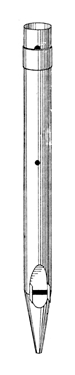
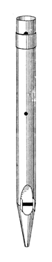

|
Claribel Flute English Clarabel Flute English Octave Clarabella English |
The name Claribel Flute was apparently first used by Henry Willis for a form of Clarabella. In his entry for Clarabella, Wedgwood provides the illustration reproduced here, with the following description:
The Willis variety of this stop (Claribel Flute), though first constructed of wood, was later made of metal and was of harmonic form. In some instances large holes were pierced in the pipes both in the centre and at the top. The size of these apertures could be regulated by means of overlapping (tuning) slides (only one of which is shown in the accompanying illustration).
According to Grove, Willis's stop was sometimes harmonic in the top octave. More likely is Audsley's and Sumner's claim that it was metal from middle c1, harmonic from g1, and wooden in the tenor and bass. While Grove and Irwin describe the Claribel Flute as a 4' stop, and Audsley calls it an Octave Clarabella, in actual usage it is far more common as an 8' stop. Skinner defines it simply as a small-scaled Clarabella, and Maclean lists the two as synonymous. Grove dates it from around 1860; the earliest known examples (see below) are from around 1870.
See also Waldflöte.Osiris contains over three dozen examples of Claribel Flute, but only two are at 4' pitch. One is at 2' pitch, one is at 16' and the rest are at 8'. No examples of Octave Clarabella are known; it is mentioned only by Audsley and may have been invented by him.
Claribel Flute 8', Great; Christ Church, Westgreen, London, England; Willis 1871. (Relocated to St. Joseph R.C. Church, Seattle, Washington, USA).
Claribel Flute 8', Great; Parish Church, Davidstow, Cornwall, England; Willis 1870.
Clarabel Flute 8', Great; United Reform Church, Bury Park, Bedfordshire, England; Norman & Beard 1906. This is the only known example of this name.
|
Original website compiled by Edward L. Stauff. For educational use only. ClaribelFlute.html - Last updated 21 January 2006. |
Home Full Index |